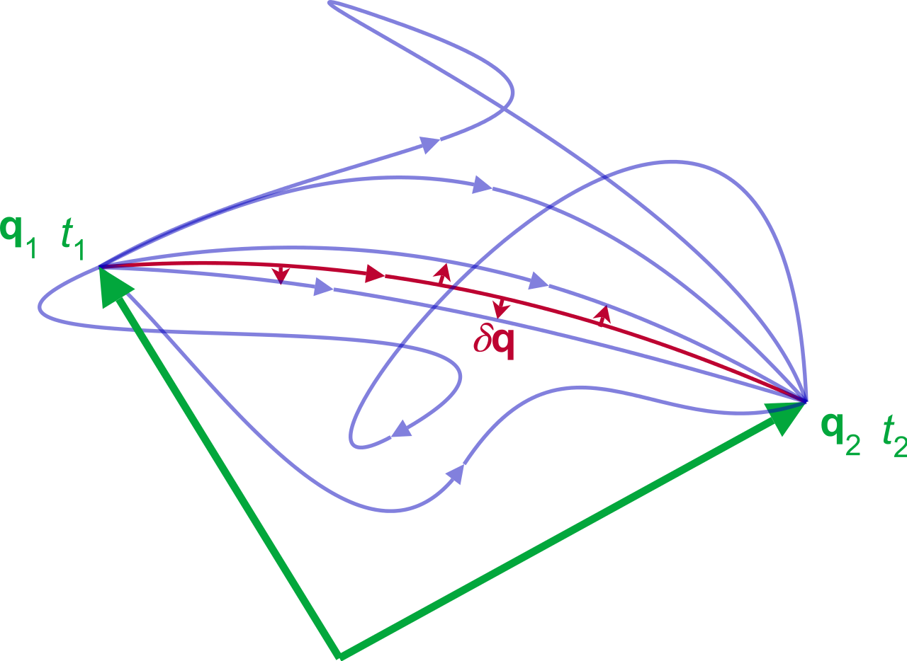
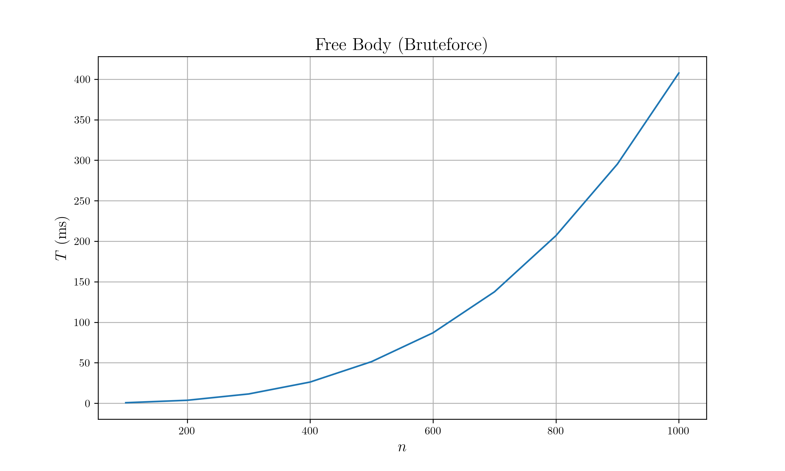
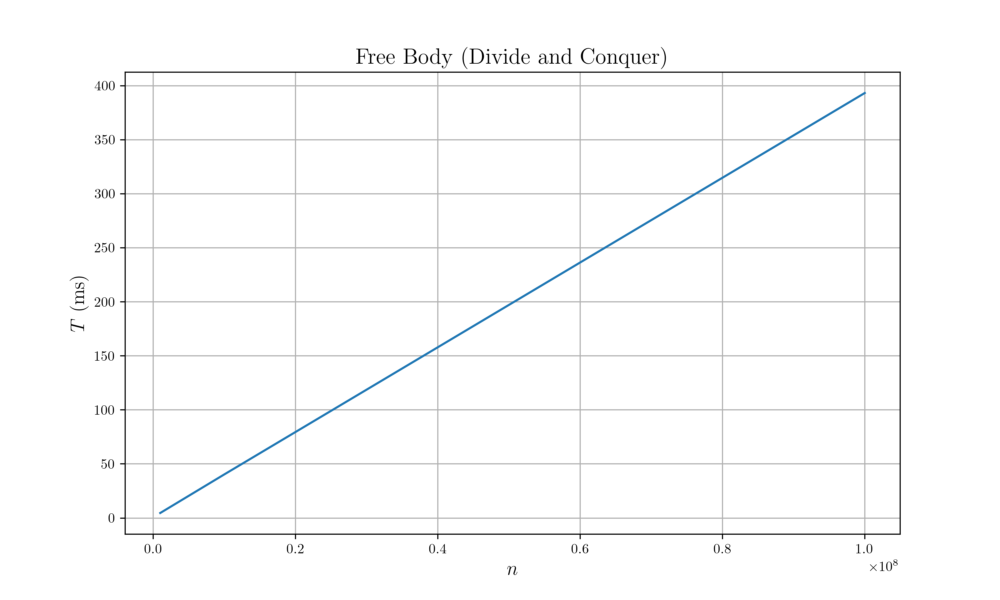
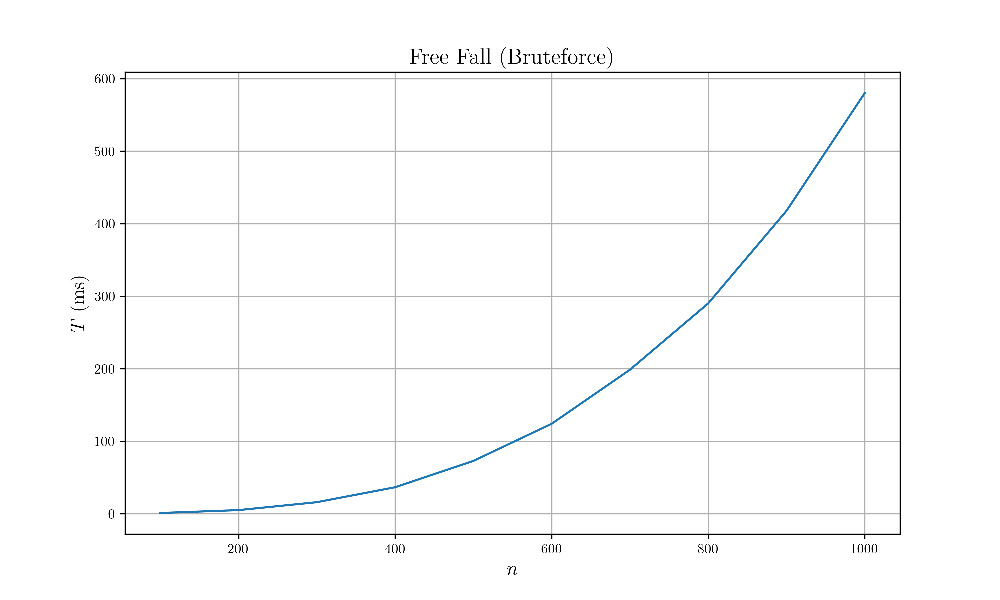
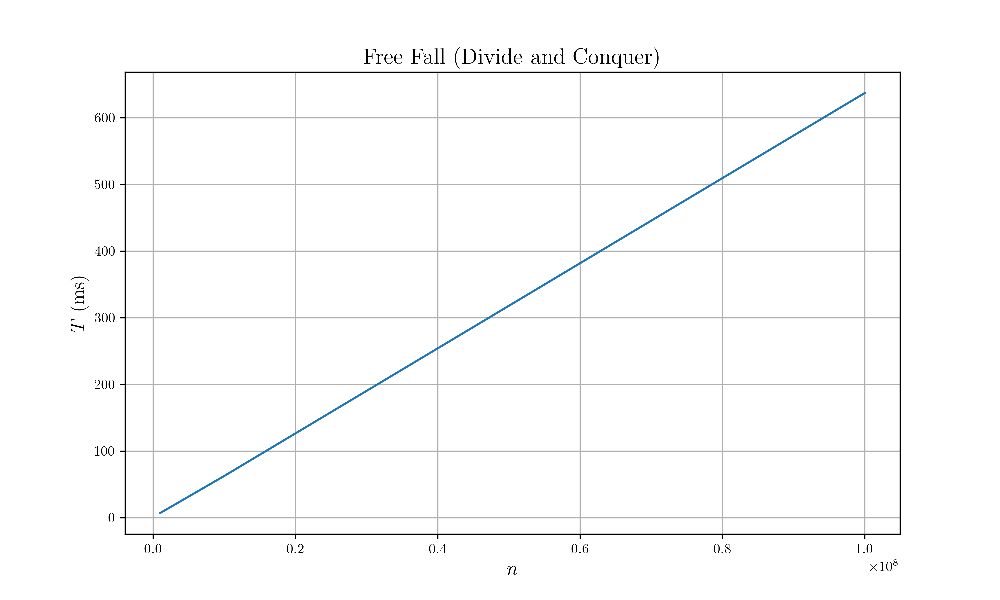
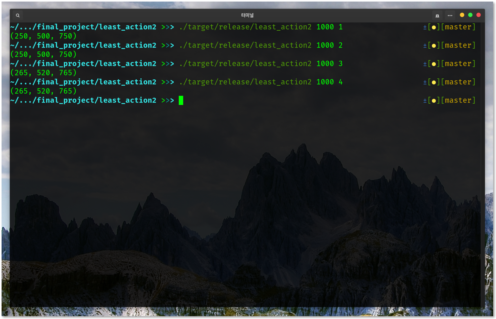

layout: true <div class="my-header"> <p class="align_left"><img src="images/yonsei_logo.png" style="height: 30px;"/></p> <p class="align_right"><b>Algorithmic approach to Least action principle</b></p> </div> <div class="my-footer"> <p class="align_right"><b>2019.06.12</b></p> <p class="align_left"><b>Tae Geun Kim</b></p> </div> --- class: center, middle # Algorithmic approach to<br/>Least action principle <h3 style="color: darkblue">Tae Geun Kim</h3> --- ## Table of Contents * The Least action principle * Problem Setup * Brute-force * Divide & Conquer * Implementation --- class: center, middle # The Least action principle --- class: split-50 ### Action .left-column[ <div id="boxshadow" style="width:90%">  </div> ] .right-column[ * In modern physics, **Action** is the most important quantity. $$ S = \int \mathcal{L}(q,\dot{q},t) dt$$ * Every path minimizes the action. This principle is called **Least action principle**. * There are uncountably many path, but by least action principle, only one path is allowed. * We can obtain **the path** by calculus of variation. $$\delta S = 0$$ ] --- ### Euler-Lagrange Equation If action & lagrangian are differentiable, then we can derive next equation. $$\frac{d}{dt}\left(\frac{\partial \mathcal{L}}{\partial \dot{q}}\right) - \frac{\partial\mathcal{L}}{\partial q} = 0$$ This equation is called **equation of motion** or **Euler-Lagrange equation**. -- * Obtain lagrangian is same as knowing physics. * Lagrangian is usually given as $$\mathcal{L}(q,\dot{q}) = \frac{1}{2}m\dot{q}^2 - V(q)$$ --- class: center, middle # Problem Setup --- ### True Least action principle **Q.** Is the path really minimize action? -- * To find this, we should discretize space. $$ \begin{gather} q \rightarrow \frac{q\_n + q\_{n+1}}{2} \\\ \dot{q} \rightarrow \frac{q\_{n+1} - q\_{n}}{\Delta t} \\\ S \rightarrow \sum\_n \mathcal{L}(\frac{q\_n + q\_{n+1}}{2}, \frac{q\_{n+1} - q\_{n}}{\Delta t}) \Delta t \end{gather} $$ * In this project, only consider 1D case. --- ### Problem & Process The problem is as follows: * Initial & final points are given and there are `\(\small n\)` uniform nodes between them. * Input Lagrangian. (`\(\small \mathcal{L}(q,\dot{q})\)`) * **Search** `\(\small m\)` distinct nodes which minimize the action. * For computational convenience, `\(\small mass = 1 = \Delta t, ~ g = 10m/s^2\)` * Also for convenience, let initial point be 0, final point be `\(\small n+1\)`. --- class: center, middle # Bruteforce searching --- ### Bruteforce searching Bruteforce searching is very simple. 1. Take `\(\small q_1 \in [1,n]\)` 2. Take `\(\small q_2 \in [q_1+1,n]\)` 3. `\(\cdots\)` 4. Take `\(\small q_m \in [q_{m-1}+1,n]\)` 5. Calculate action (`\(\small q_0 = 0, ~ q_{m+1} = n+1\)`) $$S = \sum\_{k=0}^m \mathcal{L}(\frac{q\_k + q\_{k+1}}{2}, q\_{k+1} - q\_{k})$$ 6. If the value is smaller than current minimum, then take the value as minimum & nodes as minimum nodes. 7. Repeat this process for all available `\(\small q_1\)` --- ### Bruteforce searching * Main operation: calculation of lagrangian. * Time complexity $$T(n, m) = \begin{pmatrix} n \\\ m \end{pmatrix} \times (m+1) $$ If `\(\small n \gg m,~\)` then `\(~\small T(n,m) = \mathcal{O}(n^m)\)` * Space complexity : Just update action but needed `\(\small m\)` nodes - `\(\small \mathcal{O}(m)\)` --- class: center, middle # Divide & Conquer --- ### Divide & Conquer The least action principle can be decomposed by small paths. $$ S = \int\_{t\_i}^{t\_f} \mathcal{L} dt = \sum\_j \int\_{t\_j}^{t\_{j+1}} \mathcal{L} dt = \sum\_j S\_j$$ And each decomposed path should obey *Least action principle*. At this point, we can use **Divide & Conquer** scheme to solve problem. --- ### Divide & Conquer Without loss of generality, consider odd `\(\small n, m\)`. * Time complexity $$T(2k+1, 2r+1) = T(2k+1, 1) + 2T(k, r)$$ * First, take `\(\small r\)`th point as pivot : (just take one node) $$T(2k+1,1)$$ * Recursively solve top to pivot & pivot to bottom: $$2T(k,r)$$ * And we can easy to find next relation: (find one node is totally simple) $$T(n,1) \in \mathcal{\Theta}(n)$$ * We can obtain `\(\small T(n,m)\)` by using recursion tree. --- ### Divide & Conquer * Since `\(\small n > m,~\)` the depth of recursion tree is become `\(\small \log_2 m\)`. * Each depth there is `\(\small \mathcal{\Theta}(n)\)` term. * There are `\(\small 2^{\log_2m}\)` of `\(\small 1\)` in the bottom of recursion tree. $$T(n,m) \in \mathcal{\Theta}(m + n\log\_2 m) = \mathcal{\Theta}(n\log m)$$ * If we fix `\(\small m\)`, then `\(~\small T(n) \in \mathcal{\Theta}(n)\)` --- class: center, middle # Implementation --- ### Implementation * For computational convenience, fix `\(~\small m = 3\)`. * Test two kinds of lagrangian * Free body $$\mathcal{L}(x,\dot{x}) = \frac{1}{2} \dot{x}^2$$ * Free fall $$\mathcal{L}(y, \dot{y}) = \frac{1}{2} \dot{y}^2 - gy$$ * Test various sizes of total nodes. * `\(\small n = 100 \sim 1000\)` for Bruteforce searching * `\(\small n = 10^6 \sim 10^8\)` for Divide & Conquer --- ### Free Body (Bruteforce)  --- ### Free Body (Divide and Conquer)  --- ### Free Fall (Bruteforce)  --- ### Free Fall (Divide and Conquer)  --- ### Results * In this cases, answers of Divide and Conquer & Bruteforce are always same.  * In this cases, Divide and conquer is always faster than bruteforce. * And these results are well matched with our physics. --- class: center, middle # Thank you